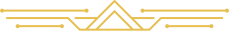
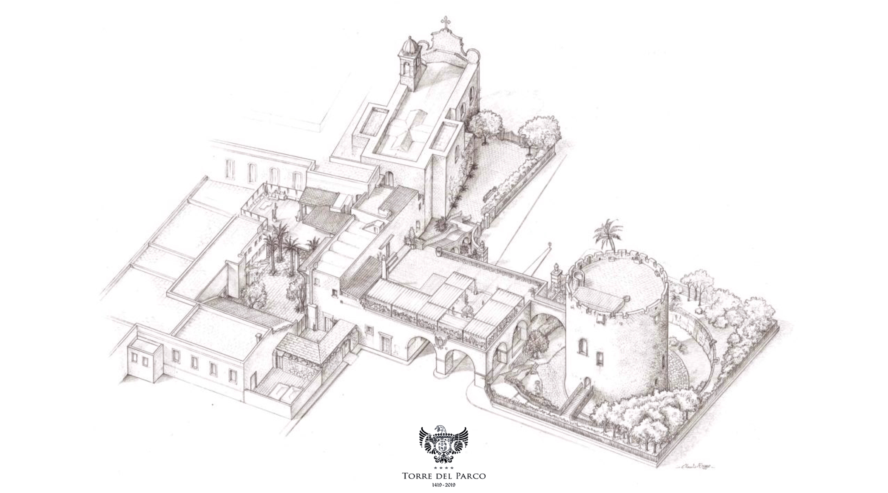

Martina & Stefano Di Crescenzio
vi invitano a celebrare il battesimo di
Non vediamo l'ora che tu ti unisca a noi:
Sabato 4 Gennaio alle ore 18:00
presso la Chiesa Madre di San Nicola / Corigliano D'Otranto
Gradita gentile conferma / +44 07821275941

Dopo la cerimonia festeggeremo presso Torre del Parco / Lecce
